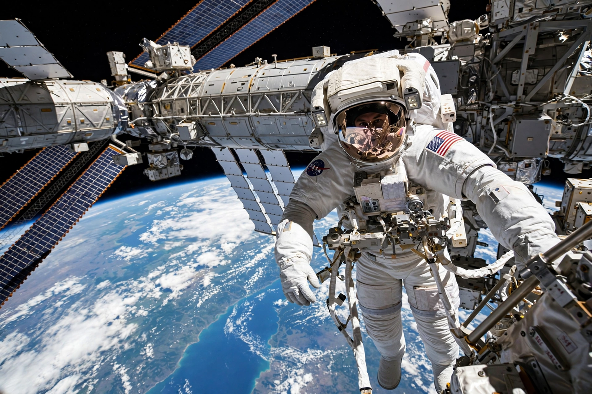

Extravehicular activity
From Wikipedia, the free encyclopedia

An ISS spacewalk high above Earth.Extravehicular activity (EVA) is any activity done by an astronaut outside a spacecraft in space — popularly called a spacewalk when the astronaut floats free of the vehicle. The first EVA was performed by Alexei Leonov on 18 March 1965, followed three months later by Edward White on Gemini 4.
Spacewalks are essential for assembling and repairing stations and telescopes: astronauts have serviced the Hubble Space Telescope on five missions and built much of the International Space Station by hand. An EVA is among the most demanding tasks in spaceflight — the pressurised suit is stiff, work is slow and fatiguing, and the astronaut depends entirely on the suit's life support. Modern suits provide oxygen, cooling, communications and micrometeoroid protection for up to about eight hours.
Records
Anatoly Solovyev holds the record for the most spacewalks, with sixteen, and the most cumulative EVA time at over 82 hours. The longest single spacewalk, by James Voss and Susan Helms in 2001, lasted 8 hours 56 minutes. China, whose astronauts first walked in space in 2008, now conducts regular EVAs from the Tiangong space station.